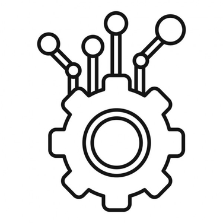
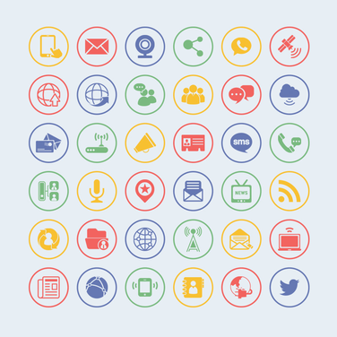
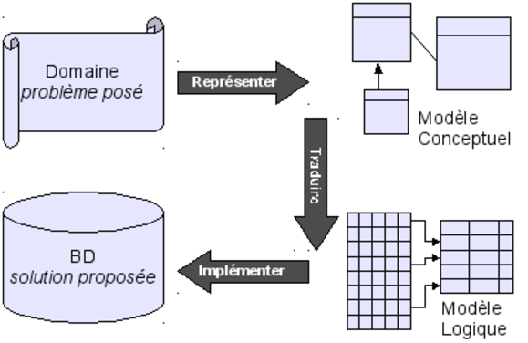

<!--Div principale-->
<div class="p-5 mb-4 bg-light rounded-3">
    <div class="container-fluid py-5">
        <!--Liste des compétences-->
        <div class="row row-cols-1 row-cols-md-2 g-4">
            <div class="col">
                <div class="card card border-secondary mb-3">
                    
                    <div class="card-body text-secondary">
                        <h5 class="card-title">Apprentissage</h5>
                        <p class="card-text">Formation et Transmission.</p>
                        <a class="btn btn-success" id="practice" onclick="displayNOK(this.id)">Voir les détails</a>
                    </div>
                    <div class="card-footer">
                        <small class="text-muted">Projet : </small>
                    </div>
                </div>
            </div>

            <div class="col">
                <div class="card card border-secondary mb-3">
                    
                    <div class="card-body text-secondary">
                        <h5 class="card-title">Capacité de travail</h5>
                        <p class="card-text">Autonomie, Disponbilité, Adaptabilité.</p>
                        <a class="btn btn-success" id="working" onclick="displayNOK(this.id)">Voir les détails</a>
                    </div>
                    <div class="card-footer">
                        <small class="text-muted">Projet : </small>
                    </div>
                </div>
            </div>

            <div class="col">
                <div class="card card border-secondary mb-3">
                    
                    <div class="card-body text-secondary">
                        <h5 class="card-title">Communication</h5>
                        <p class="card-text">Verbale, Non verbale, Ecrite : la base.</p>
                        <a class="btn btn-success" id="speaking" onclick="displayNOK(this.id)">Voir les détails</a>
                    </div>
                    <div class="card-footer">
                        <small class="text-muted">Projet : </small>
                    </div>
                </div>
            </div>

            <div class="col">
                <div class="card card border-secondary mb-3">
                    
                    <div class="card-body text-secondary">
                        <h5 class="card-title">Conception de base de données</h5>
                        <p class="card-text">Une technique au service du besoin client.</p>
                        <a class="btn btn-success" id="dataBase" onclick="displayNOK(this.id)">Voir les détails</a>
                    </div>
                    <div class="card-footer">
                        <small class="text-muted">Projet : </small>
                    </div>
                </div>
            </div>

            <div class="col">
                <div class="card card border-secondary mb-3">
                    
                    <div class="card-body text-secondary">
                        <h5 class="card-title">Management de projet</h5>
                        <p class="card-text">Un objectifs et des personnes.</p>
                        <a class="btn btn-success" id="managing" onclick="displayNOK(this.id)">Voir les détails</a>
                    </div>
                    <div class="card-footer">
                        <small class="text-muted">Projet : </small>
                    </div>
                </div>
            </div>
        </div>

        <!--Détails des compétences-->
        <div class="row">
            <div class="invisible card" id="practiceDetails">
                <div class="card-header">
                    <h1>Apprentissage : la Formation et la Transmission</h1>
                </div>
                <div class="card-body">
                    <h5 class="card-title">les connaissances et les compétences sont faites pour être partagées.</h5>
                    <div class="card-text">
                        <p>Que ce soit dans le domaine personnel ou dans le cadre de mes missions en entreprise, j'ai
                            été amené à transmettre des connaissances et compétences que ce soit dans la réalisation
                            d'installations ou l'initialisation de développements, l'enseignement de compétences
                            informatiques ou du soutien scolaire.</p>
                        <p>La transmission de connaissances est un "skill" indispensable dans le métier de développeur,
                            mais aussi de celui de chef de projet.</p>
                        <p>Pour un développeur, savoir transmettre ses connaissances, au-delà d'être le marqueur de sa
                            maîtrise d'un sujet, est capital, car cela assure la bonne continuité d'un projet. Le
                            développeur peut, en effet, être amené à quitter un projet durant la période de
                            réalisation et doit pouvoir "passer le flambeau" à son successeur, à travers
                            du pairprogramming ou une session de formation.</p>
                        <p>Le chef de projet doit pouvoir accompagner un dev débutant ou non, dans la prise en main du
                            projet dont il est le garant (garant de la qualité et de la continuité) et le responsable
                            (des résultats vis-à-vis du client, des coûts vis-à-vis de son entreprise), mais il
                            peut aussi être amené à former le client sur le produit final. Enfin, dans le
                            processus de fin de prestation, il est de la responsabilité de l'équipe de dev que le
                            client soit autonome. Cela va de l'utilisation du produit livré à sa maintenance.</p>
                        <p>Dans le cadre de mon emploi en entreprise, j'ai été amené à glisser d'une fonction de
                            développeur à celle de chef de projet. Quand cette transition a été annoncée, j'ai pris
                            l'habitude, pour chaque nouvelle manipulation, de réaliser une procédure formelle,
                            récapitulant les étapes principales, mais aussi les difficultés éventuellement
                            rencontrées.</p>
                        <p>En effet, à chaque exécution de la procédure, ce document peut et DOIT être amendé.
                            <br/>
                            Par exemple dans le cadre d'une maintenance corrective et évolutive pour un client,
                            nous avons progressivement pris en charge la livraison en production jusqu'alors sous
                            leur responsabilité. Cependant, la création et la distribution des packages ne
                            répondaient pas aux standards des livraisons sur la GMAO Maximo. En effet,
                            habituellement, la livraison se compose d'un seul package, embarquant l'ensemble des
                            fonctionnalités de la release. Ici, chaque évolution (ticket) comprenait au minimum un
                            livrable et parfois jusqu'à cinq ! En conséquence, certaines mises en production
                            pouvaient nécessiter l'installation de 20 ou 30 livrables. Cela entraînait des
                            difficultés, car la livraison, alors non automatisée, devait répondre à deux impératifs :
                        </p>
                        <ul>
                            <li>la livraison des modifications des objets avant la livraison des modifications front
                            </li>
                            <li>le respect de l'ordre d'ancienneté des modifications, afin de ne pas générer de
                                régression.
                            </li>
                        </ul>
                        <p>D'autre part, le travail de développement était assuré par mon équipe, mais aussi par une
                            équipe interne du client. Il arrivait donc que deux demandes, sur un même module,
                            soit traitées simultanément par deux équipes différentes, ce qui augmentait
                            exponentiellement
                            les risques de perte de dev et de régression. C'est ici que s'exprime le besoin d'une
                            procédure formelle de livraison, afin de minimiser ces risques. A partir des différentes
                            livraisons au cours du projet, j'ai donc créé et documenté une procédure recensant les
                            étapes de préparations, de livraison et de vérification.</p>
                        <p>Ces documents me servent dorénavant de référence dans la transmission de compétences aux
                            développeurs qui interviennent sur ce projet. Ils permettent de maintenir une méthodologie
                            de travail, validée avec le client, afin d'assurer la stabilité du projet malgré un turnover
                            projet important, inhérent à une société de service. Outre cette fonction de transmission
                            interne au projet, ces documents sont aussi le garant de l'exécution du travail pour le
                            client, mais sont aussi des appuis pour d'autres équipes. C'est notamment le cas des
                            procédures d'installation de Maximo, sur les différents types de plateforme, chaque fois
                            qu'une installation possède des spécificités non documentées, une procédure complète
                            est créée.</p>
                        <p>Pour un chef de projet, savoir transmettre et apprendre est d'autant plus important. En
                            effet, s'il ne possède pas un savoir, il doit mobiliser une personne qui l'a ou même
                            s'informer afin d'obtenir les réponses attendues. La transmission de connaissance va donc
                            de pair avec la capacité à apprendre.</p>
                    </div>
                    <a class="btn btn-primary">Go somewhere</a>
                </div>
                <div class="card-footer">
                    <small class="text-muted">Projet : RATP, Bâteau, Servier, SFR FTTH.</small>
                </div>
            </div>

            <div class="invisible card" id="workingDetails">
                <div class="card-header">
                    <h1>Capacité de travail : Autonomie, disponibilité, adaptabilité</h1>
                </div>
                <div class="card-body">
                    <h5 class="card-title">l’art de travailler seul mais d’appartenir à un groupe</h5>
                    <div class="card-text">
                        <h3>Définition :</h3>
                        <p>Capacité de travail : capacité à agir afin de remplir un objectif.</p>
                        <p>Autonomie : Droit de se gouverner par ses propres lois, Faculté d'agir
                            librement, Capacité de quelqu'un à ne pas être dépendant d'autrui ;
                            caractère de quelque chose qui fonctionne ou évolue indépendamment d'autre chose</p>
                        <p>Disponibilité : état de quelque chose dont on peut disposer, qu'on peut utiliser
                            librement.</p>
                        <p>Adaptabilité : Capacité de s'adapter à de nouveaux milieux ou à de nouvelles situations.</p>
                        <p></p>
                        <h3>Mise en contexte :</h3>
                        <p>Le projet le plus emblématique de cette capacité de travail est Pétrole.</p>
                        <p>En effet, dans le cadre de cette TMA (tierce maintenance applicative), j'ai été intégré sur
                            un projet historique de mon entreprise. Nous avons déj à plus de 5 ans de travail en commun
                            et fait un énorme travail de customisation de leur environnement de maintenance.</p>
                        <p>Avec différentes technologies (java, angular), différents environnements (Windows et linux)
                            et différents interlocuteurs (3 chefs de projet différents en deux ans, 2 MAO, 1 MOE et 3
                            développeurs à temps partiel) il m'a fallu faire preuve de ses compétences.</p>
                        <p>L'adaptabilité à tout particulièrement été essentielle afin d'intégrer les process du projet.
                            Que ce soit les méthodes de gestions des tickets, les techniques de livraisons, la rigueur
                            nécessaire à un projet de cette envergure, tout cela était un grand écart par rapport à
                            des projets "plus modeste" sur lesquels je n'avais qu'un interlocuteur, pas d'historique et
                            où; je développais seul. Cette adaptation, il faut le noter, a été facilité par la
                            <u>disponibilité</u> de mes collègues (développeurs présent et passé) qui ont su être à
                            l'écoute de mes interrogations et me transmettre leurs connaissances.</p>
                        <p>L'autonomie est un autre élément important de la capacité de travail, je vais l'illustrer
                            avec le projet Chimie. Il s'agit ici de la migration d'un Maximo (logiciel de GMAO) en fin
                            de maintenance par l'éditeur, vers une version plus récente. Faire preuve d'autonomie à
                            consister ici à chercher les informations nécessaires dans les différentes documentations
                            existantes, plutôt que de sollicité continuellement les experts techniques et à
                            expérimenter afin d'acquérir les compétences et l'expérience nécessaire pour répondre aux
                            demandes du client. L'autonomie sur ce projet s'est caractérisée à la fois par
                            l'acquisition de compétences, mais aussi une certaine humilité. En effet, être autonome ne
                            se résume pas à agir seul. Il faut aussi savoir reconnaitre quand on ne peut plus avancé
                            seul. C'est trouver un équilibre entre débrouillardise et dépendance par rapport à plus
                            compètent que nous.</p>
                        <p>La disponibilité s'exprime dans tous les projets.</p>
                        <p>Avec Pétrole, j'ai bénéficié de la disponibilité de mes collègues, qui ont bien voulu
                            partager avec moi leur expérience et j'ai à mon tour pu me rendre disponible pour les
                            nouveaux arrivant afin de répondre à leurs interrogations ou juste les aiguiller vers des
                            solutions.</p>
                        <p>Avec Chimie, j'ai fait face à un client très anxieux, qui avait beaucoup d'interrogations et
                            beaucoup d'attentes. Faire preuve de disponibilité à consister à trouver le temps, même
                            après être placé sur d'autre projets, afin de lui répondre et de l'assister. La
                            disponibilité demande ainsi une bonne dose d'organisation.</p>
                        <h3>Mon interprétation :</h3>
                        <p>Ces trois aptitudes comportementales, l'autonomie, la disponibilité et l'adaptabilité
                            concours dans la capacité de travail d'un individue.</p>
                        <p>L'autonomie renvoient pour moi à responsabilité d'un employé à assumer la confiance qui a
                            été placée en lui. L'autonomie est un privilège acquis et maintenu par la constance dans un
                            travail bien fait et répondant aux attentes initiales.</p>
                        <p>La disponibilité et l'adaptabilité renvoi à l'évolution d'une personne dans son milieu
                            professionnel. être disponible pour échanger avec un client et ses collègues, tant pour
                            comprendre un besoin que pour partager sur ses compétences et ses difficultés. être
                            adaptable afin de minimiser les possibilités de frictions (disparités entre le besoin et
                            le résultat), afin de ne pas rester bloquer sur un problème.</p>
                        <p>Si l'une de ses compétences est lacunaire, c'est toute la capacité d'un groupe à produire
                            qui est remise en cause. Dans le travail en entreprise, même si une personne travail en
                            autonomie, il participe conjointement à une équipe projet, un service et plus largement au
                            résultat de son entreprise.</p>
                    </div>
                    <a class="btn btn-primary">Go somewhere</a>
                </div>
                <div class="card-footer">
                    <small class="text-muted">Projet : Pétrole, Chimie</small>
                </div>
            </div>

            <div class="invisible card" id="speakingDetails">
                <div class="card-header">
                    <h1>Communiquer</h1>
                </div>
                <div class="card-body">
                    <h5 class="card-title">ça reste quand même la base</h5>
                    <div class="card-text">
                        <h3>Définition :</h3>
                        <p>Communication : Action de communiquer avec quelqu'un, d' être en rapport avec autrui ;
                            Action de mettre en relation, en liaison, en contact, des choses.</p>
                        <p>Communiquer : Faire passer quelque chose, le transmettre à quelque chose d'autre ;
                            Faire partager à quelqu'un un sentiment, un état ; faire savoir quelque chose à quelqu'un,
                            le lui révéler, lui en donner connaissance.</p>
                        <p>Mails, réunions, discussions, comptes-rendus, documentations, veilles techniques, etc ...
                            Choisissez n'importe quelle situation où vous n' êtes pas absolument seul et vous trouverez
                            un exemple de communication.</p>
                        <p>Dans la communication il y a deux postures possibles, émetteur et récepteur. Selon le mode de
                            communication orale ou écrite nous sommes amenés à prendre l'une ou l'autre voir alterner
                            entre les deux.</p>
                        <h3>Mise en situation :</h3>
                        <p>Dans le cas du projet Bateau, figure une très belle illustration d'une communication écrite
                            en tant qu'émetteur seulement. Quittant ce projet avec de fortes spécificités, après plus
                            d'un an de travail, j'ai réalisé une documentation &laquo; pas à pas &raquo; sur les
                            processus de livraison chez ce client. Ce document formel, avait pour vocation de
                            transmettre la connaissance nécessaire à la poursuite du projet afin que les équipes
                            suivantes puissent être immédiatement autonome. Il a donc fallu adapter ce document, afin
                            de ne laisser aucune place à l'interprétation. J'ai donc utilisé un langage simple, un style
                            concis afin de ne pas perturber l'assimilation des informations.</p>
                        <p>Dans le cadre sanitaire actuel et ses répercussions sur les modes de travail, la manager de
                            notre équipe à proposer la mise en place de présentation régulières via Teams, pendant
                            lesquelles une personne ou un groupe partage une réalisation ou une compétence ou une
                            innovation. Cet exercice a pour double but le partage de connaissance au sein de l'équipe et
                            la restauration des liens sociaux dans le groupe. Pour cet exercice, j'ai donc travaillé
                            avec une experte technique du service, Elodie, afin de présenter un module innovant que nous
                            venions de finaliser dans la cadre de la TMA <em>Pétrole. </em>Il me semble que c'est un bon
                            exemple de communication orale. Nous avons dû communiquer ensemble, afin de mettre au point
                            notre présentation : échanger nos idées et nos points de vue, nos connaissances respectives
                            des différents aspects du projet, mais aussi confronté nos mésinterprétations. Dans un
                            second temps, il a fallu présenter le résultat de notre travail à nos collègues. Ce sujet
                            très technique au point de vue métier à nécessité une bonne dose de pédagogie et de
                            simplification. Ce qui est intéressant ici, c'est que si notre communication a été bien
                            reçue au niveau général, au niveau individuel, nos raccourcis et généralisations ont pu
                            heurter certains collaborateurs qui avait une connaissance plus pointue du sujet.</p>
                        <h3>Mon interprétation :</h3>
                        <p>Cet écart dans la réception de notre intervention me permet d'aboutir à mon interprétation de
                            la communication. Si la communication est littéralement le fait de mettre en relation et de
                            transmettre à un niveau plus pratique la communication ne peux pas être séparer de
                            l'interlocuteur à qui elle s'adresse. Communiquer c'est transmettre quelques chose, une
                            information à quelqu'un. Le discours doit donc s'adapter selon qu'il est pour un groupe, une
                            personne, que l'information a une vocation pérenne ou possède un caractère éphémère. La
                            communication doit aussi prendre en compte la part d'interprétation qui sera faite sur
                            l'information transmise. Communiquer n'est donc pas une compétence figée mais un corpus de
                            situations positives et négatives qui vont permettre de toujours s'adapter et évoluer, de la
                            même manière que les signaux de fumée des amérindiens ont laissés place au téléphone
                            portable. Si on n'évolue pas dans nos modes de communication, le message ne passe pas.</p>
                    </div>
                    <a class="btn btn-primary">Go somewhere</a>
                </div>
                <div class="card-footer">
                    <small class="text-muted">Projet : Bateau, Vie en société</small>
                </div>
            </div>

            <div class="invisible card" id="dataBaseDetails">
                <div class="card-header">
                    <h1>Conception de base de données</h1>
                </div>
                <div class="card-body">
                    <h5 class="card-title">Une technique au service du besoin client.</h5>
                    <div class="card-text">
                        <h3>Définition/méthode :</h3>
                        <p>Méthodologie issue de <a href="https://www.base-de-donnees.com/concevoir-base-donnees/">
                            https://www.base-de-donnees.com/concevoir-base-donnees/</a></p>
                        <p>Pour construire une base de données, il faut faire les choses dans l'ordre :</p>
                        <ol>
                            <li>Le besoin n'existe-t-il pas déjà ailleurs ? Rien ne sert de réinventer la roueetc ...
                            </li>
                            <li>Analyser le besoin et le modéliser.</li>
                            <li>Créer concrètement la base de données.</li>
                            <li>Tester, adapter, mettre en production et sauvegarder.</li>
                        </ol>
                        <h3>Mise en situation :</h3>
                        <p>Décortiquons cette compétence, à partir de la méthodologie fournie plus haut, en l'appliquant
                            à un cas concret : la réalisation d'une solution d'archivage dans un processus de migration
                            de données.</p>
                        <ol>
                            <li>Le besoin n'existe-t-il pas déjà ailleurs ? Rien ne sert de réinventer la roueetc ...
                            </li>
                        </ol>
                        <p>Dans le cadre d'une migration de données, le client souhaitait garder une trace des
                            opérations de commande (bon de commande, demande de devis, demande d'achat, etc ...).
                            Celui-ci, disposait déjà d'une application permettant de gérer ces procédures d'achats. Une
                            fois les besoin clients définit, plut&ocirc;t que de recréer une table à partir de rien,
                            j'ai dupliqué et épuré les tables déjà existantes, servant a l'application de gestion des
                            commandes.</p>
                        <ol start="2">
                            <li>Analyser le besoin et le modéliser.</li>
                        </ol>
                        <p>Notre client avait une idée de ce qu'il voulait, une application d'archivage, mais sans plus
                            de précision. J'ai donc réalisé une maquette de l'application mais surtout, j'ai listé les
                            champs qui me paraissaient les plus pertinents et modélisés les liens entre les tables et
                            j'ai ainsi rédigé une proposition de spécificités pour cette nouvelle app. Une fois la
                            proposition amendée puis validée, j'ai commencé à travailler à la réalisation de la
                            solution.</p>
                        <ol start="3">
                            <li>Créer concrètement la base de données.</li>
                        </ol>
                        <p>C'est ici que la duplication et l'épuration des tables s'opère. A partir du travail
                            préparatoire, je réalise la création des tables ainsi que les ajustements nécessaires pour
                            répondre au besoin (nouveaux lien, suppression de champs, création de champs originaux, etc
                            ...)</p>
                        <ol start="4">
                            <li>Tester, adapter, mettre en production et sauvegarder.</li>
                        </ol>
                        <p>Nous en sommes maintenant à la dernière étape. Après plusieurs allers-retours entre le test
                            et le développement (la confrontation entre la proposition et l'utilisation réelle de
                            l'application eux se révélée violente), nous sommes maintenant entrés dans la phase de qual.
                            Nous vérifions que les développements n'entrainent aucune régression sur un environnement de
                            préprod. J'espères que le déploiement pourra s'opérer prochainement.</p>
                        <p></p>
                        <p>La conception de base de données me semble une compétence importante car elle suppose d'avoir
                            des compétences à la fois technique (conception et réalisation de la base), d'analyse (du
                            besoin), des connaissances métiers, des compétences rédactionnelles et enfin des compétences
                            humaines (communication et recul nécessaire pour pouvoir reprendre son travail et répondre
                            au mieux au besoin).</p>
                        <h3>Ma définition :</h3>
                        <p>Concevoir une base de données, c'est à partir du besoin exprimé par le client concevoir la
                            structure des tables (nombre de tables, nombres de champs, type, longueur, etc ...) afin de
                            répondre à ce besoin.</p>
                        <p>La conception de la base de données est une étape importante dans le but de répondre aux
                            besoins du client. En effet, si la table est mal conçue, elle peut nécessiter une refonte ou
                            dans les cas les plus drastiques être un obstacle au fonctionnement de l'application.</p>
                        <p></p>
                        <p></p>
                    </div>
                    <a class="btn btn-primary">Go somewhere</a>
                </div>
                <div class="card-footer">
                    <small class="text-muted">Projet : </small>
                </div>
            </div>

            <div class="invisible card" id="managingDetails">
                <div class="card-header">
                    <h1>Gestion de projet et managemetn d'equipe</h1>
                </div>
                <div class="card-body">
                    <h5 class="card-title">Un projet ; un but et des personnes</h5>
                    <div class="card-text">
                        <p>Dans cette &laquo; super compétence &raquo; Projet j'ai décidé de réunir le management de
                            projet et le management d'équipe.</p>
                        <h3>Définition :</h3>
                        <p>Management de projet : il s'agit de l'ensemble des techniques mise en place afin de définir,
                            calibrer, monitorer et mener à bien un objectif final et l'ensemble de ses objectifs
                            intermédiaires dans le respect des engagement (financiers et temporels et de portée, c'est
                            le triangle de contrainte) pris au départ du projet.</p>
                        <p>Management d'équipe : c'est l'ensemble des techniques utilisé afin de permettre à des
                            personnes, travaillant à la réalisation d'un objectif, d'agir ensemble et en corrélation
                            avec des éléments interne et externe à l'équipe (collaborateurs éventuels, budget, temps,
                            etc ...).</p>
                        <p></p>
                        <h3>Mise en contexte :</h3>
                        <p>J'ai eu l'opportunité de pratiquer en tant que chef de projet et de diriger des équipes lors
                            de mon expérience professionnelle actuelle et antérieure.</p>
                        <p>Peu de temps après mon premier dipl&ocirc;me (en tant que charger de projet culturel), afin
                            de me construire une expérience j'ai participé à titre bénévole à un chantier international,
                            le Projet Ch&acirc;teau. Le principe est, pour des jeunes du monde entier, de venir
                            bénévolement en France, où ils seront pris en charge (nourrit, logé, blanchit) pour une
                            durée déterminée, en échange de leur participation a un projet culturel, ici la restauration
                            d'un fort du XIXème siècle en Région Parisienne (Chelles). J'étais responsable de
                            l'organisation de la vie des bénévoles internationaux (planning, budget du camps). Cette
                            expérience a été importante dans la construction de mes capacités de gestion. En effet,
                            plein de bonne volonté et de motivation, durant les deux premières semaines j'ai investi
                            énormément d'efforts et de temps afin que ce séjour se passe au mieux (articulation
                            travail-loisir, repas, courses, etc ...) tout en remplissant les objectifs de restauration
                            pour lesquels nous avions pris un engagement. Si tout s'est bien passé, j'ai rapidement
                            ressenti les limites du management vertical. Au bout de deux semaines j'étais épuisé. J'ai
                            donc dû me remettre en question afin de voir quelle t&acirc;che n'avait pas besoin d' être à
                            ma charge et donc déléguer à mon co-responsable.</p>
                        <p>Le Projet Festival est une expérience intéressante par son envergure et la dualité de
                            l'objectif du projet.</p>
                        <p>J'étais charger d'organiser et développer la nouvelle édition d'un festival d'art vivant dans
                            le cadre des actions culturelles d'un CROUS (Centre Régional des &OElig;uvres Universitaires
                            et Scolaires). L'objectif de ma mission était donc de maintenir l'audience tout en
                            diversifiant la programmation.</p>
                        <p>Au cours de cette mission j'ai interagi avec différents acteurs interne et externe (ville,
                            journaux, services techniques, etc ...) afin d'organiser, produire et diffuser le festival.
                            J'ai aussi dû gérer les différentes compagnies d'artistes (acteur, danseurs, circassiens)
                            pour les résidences, leur représentation et leur participation en tant que bénévole , les
                            intermitants du théatre</p>

                        <h3>Ma définition :</h3>
                    </div>
                    <a class="btn btn-primary">Go somewhere</a>
                </div>
                <div class="card-footer">
                    <small class="text-muted">Projet : Projet Bateau, Projet Festival, Projet Château</small>
                </div>
            </div>

            <!--<div class="invisible card" id="managingDetails">
                <div class="card-header"><h1>
                    Featured
                </div>
                <div class="card-body">
                    <h5 class="card-title">Special title treatment</h5>
                    <p class="card-text">With supporting text below as a natural lead-in to additional content.</p>
                    <a class="btn btn-primary">Go somewhere</a>
                </div>
                <div class="card-footer">
                    <small class="text-muted">Projet : </small>
                </div>
            </div>-->
        </div>

        <!--Boutton de retour à la liste-->
        <a class="d-grid gap-2 col-6 mx-auto btn btn-success invisible standard" id="goBack" onclick="displayOK()">
            Retourner à la liste</a>
    </div>
</div>